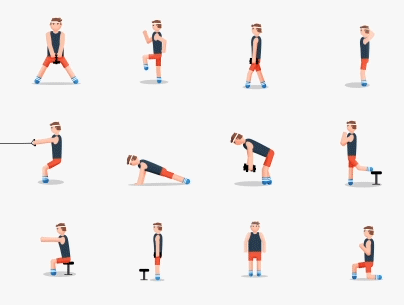
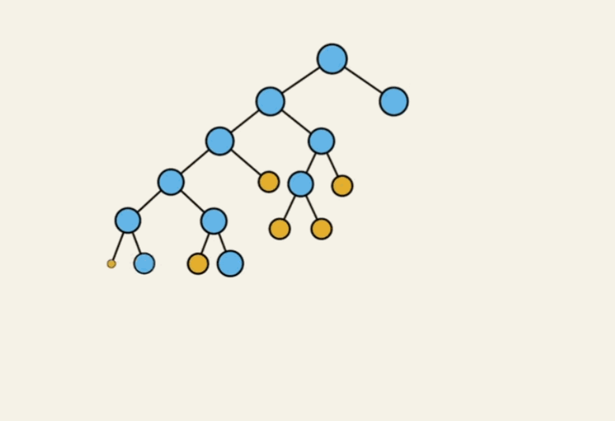
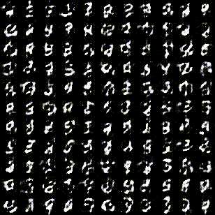
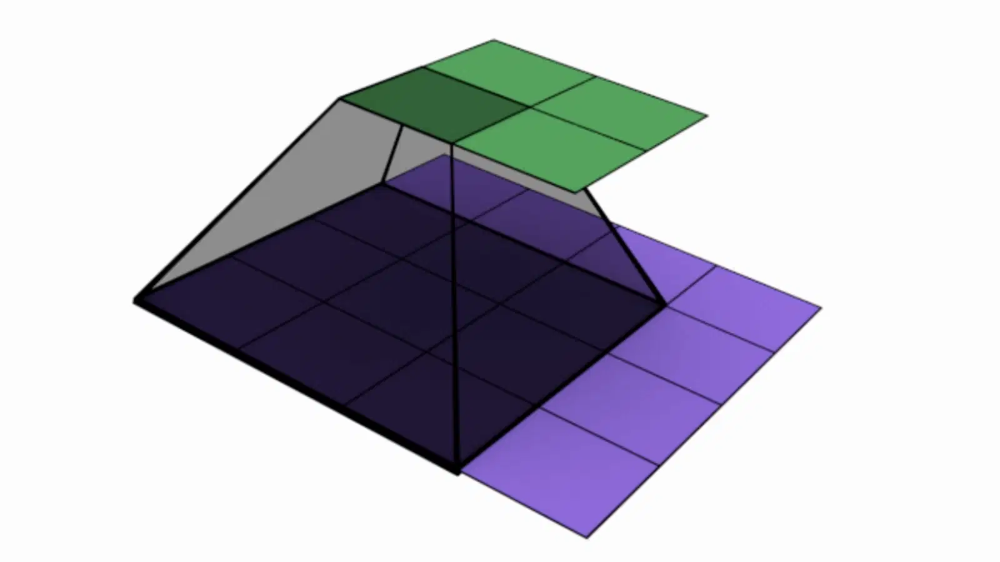

As a Research Assistant at UTARI, I contribute to the development of an AI-driven golf swing training system. This innovative project combines computer vision and AI to offer golfers immediate feedback on their swings, promoting independent skill development. My responsibilities at the moment include integrating advanced 3D cameras, creating structured JSON files, and managing a PostgreSQL database to collect and store swing analysis data. This project demonstrates the transformative potential of AI in sports technology, making skill improvement more accessible and efficient.
Implemented a toy "search engine" in Python that reads a corpus, produces TF-IDF vectors for documents, and returns the document with the highest cosine similarity score for a given query. The project involved natural language processing, tokenization, stopword removal, stemming, and computation of TF-IDF vectors. It showcases proficiency in Python, NLTK, and information retrieval techniques. The search engine follows the ltc.lnc weighting scheme for query-document similarity, demonstrating a solid understanding of information retrieval principles.

This project focuses on the algorithmic analysis for Cladocopium classification based on the host coral species (Orbicella annularis, OANN) using various machine learning algorithms. The goal is to provide a comprehensive understanding of the classification performance and identify significant features contributing to the classification outcome.

This project involved the classification of NBA players into their respective positions using machine learning techniques. The model, built with a Support Vector Classifier, achieved improved accuracy through careful data preprocessing, feature selection, and hyperparameter tuning. The project showcases my skills in data analysis, classification, and model evaluation using Python and scikit-learn.

This project demonstrated our proficiency in graph analysis. We utilized techniques such as in-degree centrality and clique identification to highlight the top 5 cited papers and maximal groups of mutually connected authors. The project showcased our skills in data analysis, pattern recognition, graph mining, and Python-based network analysis.
In this project, the goal was to analyze the trend in the number of accidents in New York City from September 2017 to August 2019. We started by cleaning and modifying the data using Python’s Pandas package, extracting appropriate vehicle names, and grouping the data by months and years. The project also involved creating compelling visualizations with Python’s Matplotlib package. These visualizations proved invaluable in understanding various analyses, such as the car maker with the most accidents in a year, trends in accidents over months, and the types of vehicles involved.

In this project, we developed an advanced machine learning system capable of predicting exercises with 94% accuracy using Python scripting. We expertly implemented a neural network in Keras, processing vast datasets of over 1000 users. The project also focused on enhancing data quality, reducing inaccuracies by 50%, and mitigating biases for fair recommendations.
This project aimed to analyze the performance of different actors and actresses over their entire careers. To achieve this, we designed SQL queries to extract the number of movies done by each actor or actress in a year within their respective career spans. We also calculated the average ratings of their movie performances in those years. The project involved visual analysis and comparisons of year-wise and overall performance of each actor and actress based on the number of movies and their average movie ratings.

In this project, we implemented a custom Decision Tree Classifier from scratch in Python, providing a versatile machine learning model for classification tasks. Our goal was to create a powerful and interpretable tool for decision-making and pattern recognition. This project explores the inner workings of decision trees, from tree growth and splitting criteria to prediction and evaluation.

For this project, we designed and implemented a Deep Convolutional Generative Adversarial Network (DCGAN) for image synthesis. This involved collaboration on TensorFlow and Keras platforms to enhance discriminator and generator functions. We applied gradient-based training for GANs through the model.fit() API on the MNIST dataset using scikit-learn.

This project involved building and training a multi-layer neural network using TensorFlow. The network architecture included options for specifying the number of layers, activation functions, learning rate, batch size, and training epochs. It provided support for Mean Squared Error (MSE), Support Vector Machine (SVM), and Cross-Entropy loss functions.

Convolutional Neural Networks (CNNs) are a class of deep neural networks commonly used for image classification and recognition tasks. This project provided a flexible and customizable CNN implementation using TensorFlow and Keras. It featured various components like input layers, dense layers, convolutional layers, max-pooling layers, flattening, and customization options for training and evaluation, all powered by TensorFlow and Keras.